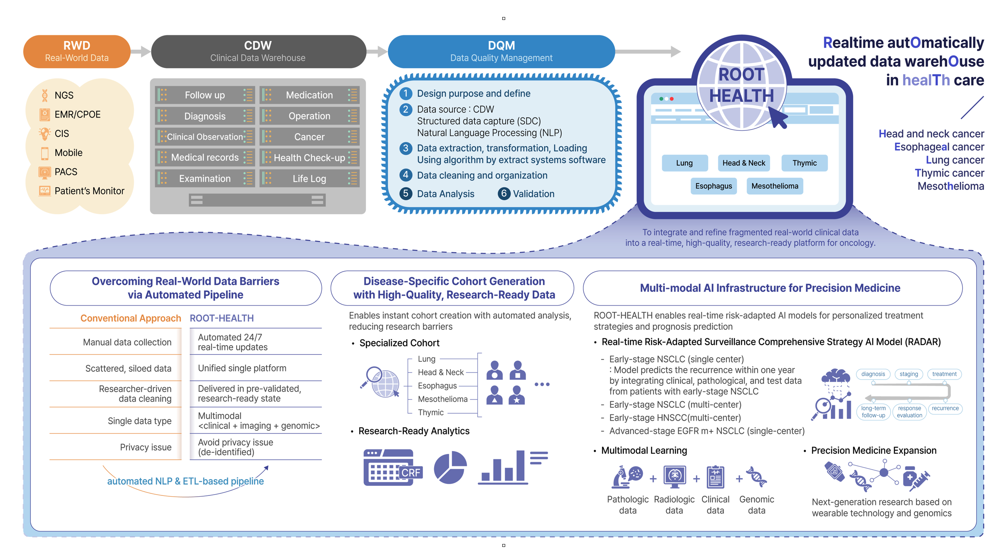

ROOT HEALTH
Real-time autOmatically updated data warehOuse for healThcare in Head and neck cancer, EsophageAl cancer, Lung cancer, Thymic cancer, and mesotHelioma
What is ROOT HEALTH?
ROOT HEALTH is a research-ready oncology data platform that integrates longitudinal real-world clinical information for cancer research. It brings together registry information, patient characteristics, follow-up and outcomes, diagnosis and staging, molecular testing, treatment history, imaging, outpatient follow-up, and laboratory data.
The current NSCLC cohort includes patients who received cancer-directed treatment at Samsung Medical Center and is designed to support longitudinal, multimodal clinical research and AI development.
ROOT HEALTH Platform
ROOT HEALTH organizes routinely generated real-world data into a research-ready infrastructure for disease-specific cohort generation, longitudinal analysis, and multimodal AI research.

ROOT HEALTH platform overview.
Explore Our Data
Discover the scale and range of our data resources, including clinical variables, biomarkers, imaging, follow-up, and laboratory tests.
View Data